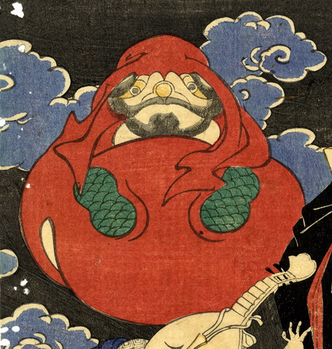

達磨のように変化した木魚。全体が赤く、持ち手の部分が男の顔になっている。
著作者：一魁斎芳年／出典：親書誌：U426_nichibunken_0224：百器夜行；ヒャッキヤギョウ／日付：2010／資源識別子：U426_nichibunken_0224_0014_0000
Copyright (c)2010- International Research Center for Japanese Studies, Kyoto, Japan. All rights reserved.